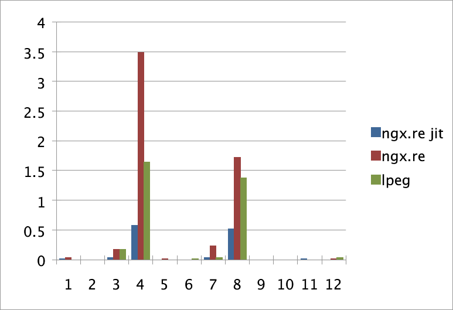

上一周清明假期，我开始用luapower自带的nginx搞些事情。Luapower是一个非常棒的LuaJIT二进制发行版，它自带了较为完整的跨平台LuaJIT生态，对于厌恶从C编译的Lua小白（就像我这样的）来说简直是福音啊。它里面就自带了一个nginx，并且支持OpenResty的生态，这就方便了我接下来做的一个有关模式匹配引擎性能的对比。
我目前看到的OpenResty相关的模式匹配性能测评基本上都是围绕ngx.re（即PCRE）与lua pattern的对比。首先大家应该明白一个概念，OpenResty使用的是LuaJIT，它的lua pattern自然也是JIT加成的，所以你的ngx.re也应该开JIT参数跟它比。而开了JIT的ngx.re是比lua pattern稍快的。由于下面我们要比较的lpeg并非JIT版本，所以跟不加jo参数的ngx.re比较也是有意义的。
那么JIT是什么呢？我想有人不是那么了解。我为大家翻译了维基百科：
在计算机技术中，即时编译（JIT，也称为动态翻译或运行时编译）是一种执行计算机代码的方法，这种方法涉及在程序执行过程中（在运行时）而不是在执行之前进行编译。通常，这包括源代码或更常见的字节码到机器码的转换，然后直接执行。实现JIT编译器的系统通常会不断地分析正在执行的代码，并确定代码的某些部分，在这些部分中，编译或重新编译所获得的加速将超过编译该代码的开销。
我对lpeg寄予厚望，所以自然要测一下lpeg和ngx.re比起来到底性能怎样。这里使用的数据集来自regex-performance里面的3200.txt文件。不过，我发现如果不加任何优化，在匹配大文件的时候，lpeg会吃亏，所以在搜索的pattern里，我加了最简单的排除法：
比如下面第三个例子，我最初的lpeg代码是
xxxxxxxxxxs <- {('Huck' / 'Saw') [a-zA-Z]+} / . s
这样的想法是很直接，但会造成搜索的时候，每次向后移一个字符就要再重新匹配一次s，但如果排除掉不是H和S开头的单词的话，那就减少了很多的检查。修改之后是
xxxxxxxxxxs <- {('Huck' / 'Saw') [a-zA-Z]+} / . [^HS]* s
| ngx.re | lpeg | |
|---|---|---|
| 1 | Twain | s <- {'Twain'} / . s |
| 2 | [a-z]shing | s <- {[a-z] 'shing'} / . s |
| 3 | Huck[a-zA-Z]+|Saw[a-zA-Z]+ | s <- {('Huck' / 'Saw') [a-zA-Z]+} / . [^HS]* s |
| 4 | \b\w+nn\b | s <- {(!'nn' %w)+ 'nn'} %W / . %w* %W* s |
| 5 | [a-q][^u-z]{13}x | s <- {[a-q] [^u-z]^13 'x'} / . s |
| 6 | Tom|Sawyer|Huckleberry|Finn | s <- {('Tom' / 'Sawyer' / 'Huckleberry' / 'Finn')} / . s |
| 7 | .{2,4}(Tom|Sawyer|Huckleberry|Finn) | s <- {.^2 .^-2 ('Tom' / 'Sawyer' / 'Huckleberry' / 'Finn')} / . s |
| 8 | Tom.{10,25}river|river.{10,25}Tom | s <- {'Tom' .^10 t1} / {'river' .^10 t2} / .^15 [^Tr]* st1 <- (!'river' .)^-15 'river't2 <- (!'Tom' .)^-15 'Tom' |
| 9 | [a-z]+ing | s <- { t } / . st <- [a-zA-Z] (!'ing' [a-zA-Z])* 'ing' |
| 10 | \s[a-zA-Z]{0,12}ing\s | s <- { %s t %s } / . st <- (!'ing' [a-zA-Z])^-12 'ing' |
| 11 | ["'][^"']{0,30}[?!.]["'] | s <- {["'][^"'] (!t .)^-30 t} / . [^"']* st <- [?!.]["'] |
| 12 | \u{221E}|\u{2713} | s <- {'\u{221E}' / '\u{2713}'} / . [^\226]* s |
我使用了最基础的nginx配置（因为我是nginx的新手）。不过做这个测试应该已经足够了。error_log我设置成了info等级，方便我调试代码（因为print函数默认会打info等级的日志，我还不太常用ngx.log）
xxxxxxxxxxworker_processes 1;error_log logs/error.log info;events { worker_connections 1024;}http { server { listen 6699; location = / { charset UTF-8; content_by_lua_file test.lua; } }}纵坐标单位是秒（越少越好），显示的是上述pattern执行次数是100次的时间。

可以看出我们的lpeg还是很争气的，性能要比没有JIT加成的PCRE好一些。不过，在JIT加成后的PCRE比起来，还是有差距。但我想，如果lpeg也用JIT的方法把它的VM（lpeg本身是先翻译成bytecode，再在VM里执行的）重写一下，性能超过PCRE JIT应该是没有问题的。而且，大家可以发现，lpeg可以进行一些针对性的优化，而正则的话，想要优化可能并不容易。∎